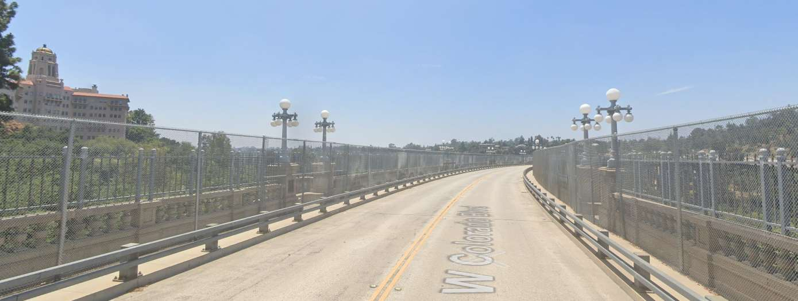
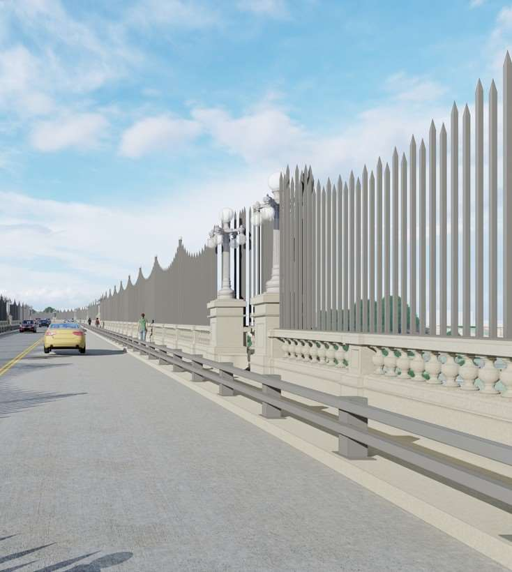
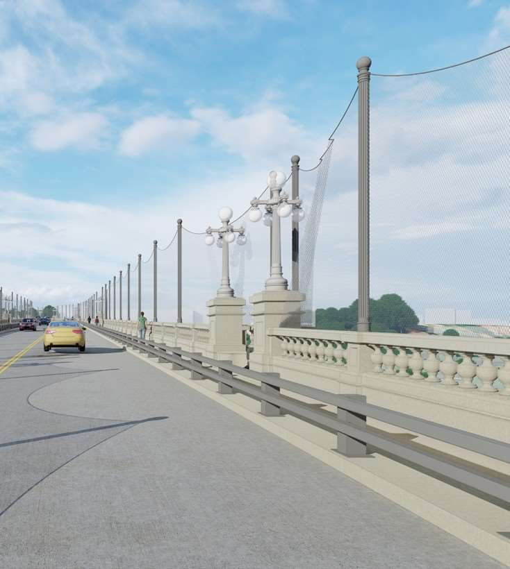
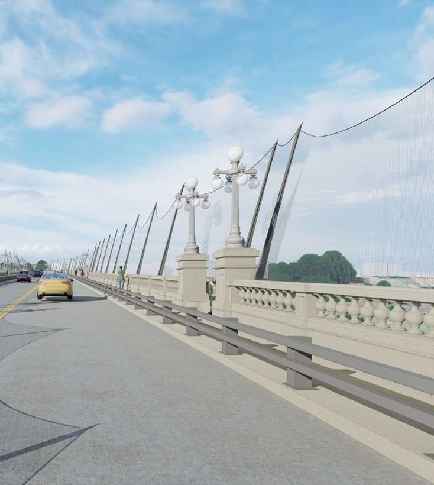

Horizontal netting
The record does not say that nets never work. It describes why Pasadena’s reviewers recommended against a net at this particular bridge, while some engineering work remained preliminary.
Read the horizontal netting record →INDEPENDENT PROJECT GUIDE
Pasadena’s work since 2017 on a permanent suicide prevention barrier, documented through City reports, meetings, and recordings.

Start with the upright barrier designs. Then choose another approach to see what was studied and what people said about it.
Skip to netting, landscaping, patrols, and technology
The temporary chain-link fence is different from the proposed permanent barriers. These images come from the City’s July 17, 2024 presentation. They show what the designs look like, not which options are still being considered.




Earlier curved-mesh mockups and the February 2020 enclosure request belong to different stages of the project. Read the February 2020 record. Images are included to explain the designs and are credited to the City.
These reviews took place as the City pursued the Council’s decision to develop a permanent barrier.
The record does not say that nets never work. It describes why Pasadena’s reviewers recommended against a net at this particular bridge, while some engineering work remained preliminary.
Read the horizontal netting record →The 2018 report found no verifying scientific data for using trees below the bridge to cushion a landing or discourage an attempt. It treated trees as a possible addition to a vertical barrier, not a replacement.
Read the trees & landscaping record →City staff examined cost and practical coverage. They treated human presence as something that could accompany a physical barrier, while repeatedly advising against relying on staffing to replace it.
Read the staffing & patrols record →Cameras, sensors, phones, and later remote intervention were considered as ways to detect a crisis or help someone respond. The City’s reviewed approach continued to treat these tools as additions to physical protection.
Read the cameras & technology record →